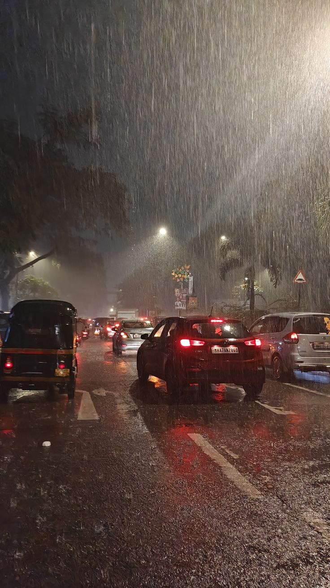
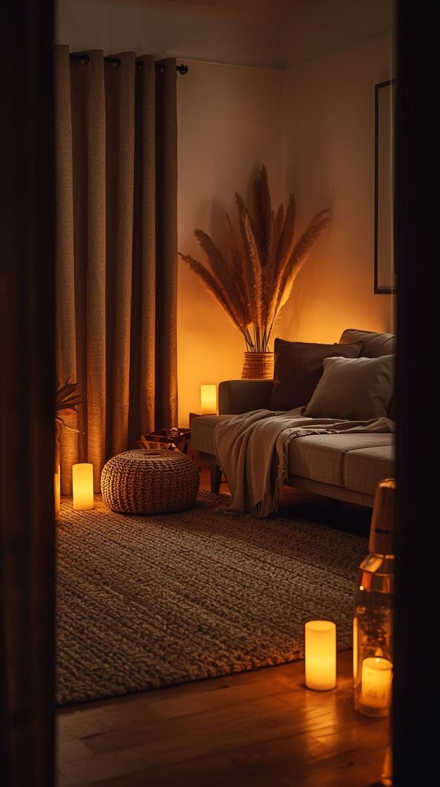
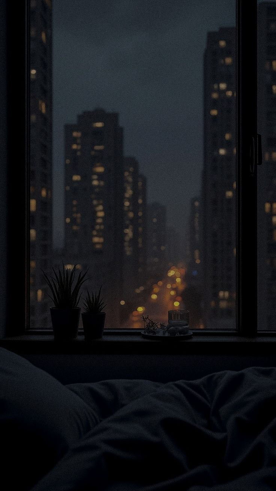

"Har din ki tarah us shaam bhi ghar lautna tha... lekin har safar apne saath kuch chhoti yaadein chhod jaata hai."

✦ Mumbai Rain Street ✦
Saturday ki duty khatam ho chuki thi.
Office ki deewaron par chhayi khamoshi ab dheere dheere khatam ho rahi thi.
Aamina ne bhi apna computer band kar diya.
Dono ne apni apni desk theek ki.
Aur roz ki tarah ek hi jumla kaha.
"Allah Hafiz."
"Allah Hafiz."
Dono office se bahar nikal gaye.
Saturday khatam ho chuka tha.
Building ke bahar aate hi Fahad ne ek gehri saans li.
Poora din AC wali cabin mein guzra tha.
Bahar ki hawa alag hi mehsoos ho rahi thi.
Shaam dhal chuki thi.
Aasmaan par suraj ka aakhri rang dheere dheere andhere mein kho raha tha.
Sadak par log apni apni manzilon ki taraf bhaag rahe the.
Koi auto rok raha tha...
Koi phone par ghar walon ko bata raha tha ke bas pahunchne wala hoon...
Koi chai ki tapri par ruk kar din bhar ki thakan utaar raha tha.
Fahad ne apna bag kandhe par theek kiya aur bus stop ki taraf chal diya.
Ye raasta woh pichhle do saal se lagbhag roz tay kar raha tha.
Raaste ki har dukaan...
Har signal...
Har mod...
Sab uske liye jaane pehchaane the.
Bus stop par pahunchte hi usne ghadi dekhi.
Roz ki tarah kuch log pehle se hi intezar kar rahe the.
Kisi ke kaan mein earphones the.
Koi mobile mein reels dekh raha tha.
Koi bas chup-chaap sadak ki taraf dekh raha tha.
Thodi der baad door se laal rang ki A180 bus nazar aayi.
Bus abhi poori tarah ruki bhi nahi thi ke kuch log darwaze ki taraf badhne lage.
Fahad ne aadat ke mutabiq sabr se line ka intezar kiya.
Bus rukte hi woh bhi dheere se andar chadh gaya.
Aaj bhi bus ka wahi haal tha.
Lagbhag saari seats bhari hui thi.
Usne upar wali rod pakdi aur chup-chaap khada ho gaya.
Bus chal padi.
Har stop par kuch log utarte...
Aur usse zyada log chadh jaate.
Kuch hi der baad ek buzurg aadmi bus mein chadhe.
Unhe dekhte hi Fahad ke chehre par halki si muskurahat aa gayi.
Ye buzurg usse naye nahi the.
Lagbhag roz isi waqt isi bus mein mil jaate the.
Aur roz kisi na kisi se seat ko lekar behes karte the.
Aaj bhi wahi hua.
Unhone saamne khade ek naujawan se kaha,
"Beta... uth jao. Mujhe baithna hai."
Naujawan ne thakawat bhari awaaz mein kaha,
"Uncle... main bhi kaafi der se khada tha. Abhi abhi seat mili hai."
Buzurg ne phir kuch budbudaaya.
Bus mein baithe do teen log unki taraf dekhkar muskurane lage.
Conductor ne ek baar unki taraf dekha...
Phir bina kuch kahe doosri taraf muh kar liya.
Jaise woh bhi jaanta ho...
Kal phir yahi manzar dekhne ko milega.
Aakhir kisi aur musafir ne apni seat chhod di.
Buzurg aaraam se baith gaye.
Aur bus mein phir se roz wali khamoshi laut aayi.
Fahad ab bhi khada tha.
Do stop aur guzre.
Tabhi peeche wali ek seat khaali hui.
Us seat ke bagal mein ek burkhe mein baithi ladki thi.
Woh bhi roz isi bus mein dikh jaati thi.
Na kabhi Fahad ne usse baat ki.
Na hi kabhi uski taraf khaas tawajjo di.
Bas itna zaroor tha...
Ke woh ladki bus ke lagbhag har regular musafir ko pehchaan gayi thi.
Use andaaza hota tha ke kaun kis stop par utrega.
Kabhi kisi aunty se keh deti,
"Agla stop aapki seat khaali ho jayegi."
Kabhi kisi buzurg ko ishara kar deti,
"Uncle, do minute ruk jaiye."
Aur waqai do minute baad seat khaali ho jaati.

✦ Ammi Ka Pyaar ✦
Aaj bhi usne saamne ishara karte hue kisi khadi aurat se kaha,
"Didi... agle stop par ye seat khaali ho jayegi."
Fahad ne ek pal ke liye us taraf dekha.
Phir nazar hata li.
Uske bagal wali seat bhi ab khaali thi.
Ek lamhe ke liye woh jhijhka.
Phir aaraam se jaakar baith gaya.
Na usne kuch kaha.
Na us ladki ne.
Bus apni raftaar se Mumbai ki roshniyon ke beech aage badhti rahi.
Khidki ke bahar shehar bhaag raha tha...
Aur andar har musafir apni apni khamoshi mein gum tha.
Fahad ke bagal mein baithi burkhe wali ladki ne khidki ke bahar dekhte hue halka sa kaha,
"Lagta hai aaj bus thodi late chal rahi hai."
Fahad ne nazar uthaye baghair sirf itna kaha,
"Haan... shayad."
Ladki muskura di.
Kuch der baad bus ek bade signal par ruk gayi.
Bahut lambi line lagi hui thi.
Usne phir dheere se kaha,
"Aaj Saturday hone ke baad bhi itni bheed hai."
Is baar bhi Fahad ne sirf adab ke saath jawab diya.
"Ji."
Uske baad dono dobara khamosh ho gaye.
Na ladki ne baat badhayi...
Na Fahad ne.
Fahad ki aadat hi aisi thi.
Woh har kisi se izzat se baat karta tha...
Lekin zarurat se zyada guftagu se hamesha bachta tha.
Usne dobara khidki ke bahar dekhna shuru kar diya.
Raat dheere dheere shehar par utar rahi thi.
Dukaanon ke board roshan ho chuke the.
Footpath par chai walon ke paas bheed badhne lagi thi.
Ek jagah kuch bachche ab bhi cricket khel rahe the.
Kahin ek couple haath mein shopping ke bags liye haste hue chal raha tha.
Horn ki awaazein...
Signal ki laal roshni...
Auto walon ki awaaz...
Sab kuch roz jaisa hi tha.
Magar har roz ki tarah aaj bhi Fahad in sab ko bas dekhta tha...
Unka hissa kabhi nahi banta tha.
Bus ek ke baad ek stop paar karti rahi.
Kuch der baad conductor ne zor se awaaz lagayi,
"Agla stop..."
Ye Fahad ka stop tha.
Usne aaraam se bag kandhe par dala.
Seat se utha.
Aur bina kisi taraf dekhe bus se neeche utar gaya.
Bus aage badh gayi.
Uske saamne hi masjid thi.
Isha ki jamaat shuru hone mein bas kuch hi lamhe baaki the.
Fahad ne chalne ki raftaar tez kar di.
Masjid mein dakhil hote hi usne wuzu kiya.
Saf ke aakhri hisse mein jaakar khada ho gaya.
Takbeer hui.
Aur kuch hi palon mein duniya ki saari awaazein uske liye khatam ho gayin.
Namaz ke baad woh kuch der wahi baitha raha.
Tasbeeh padhi.
Dua maangi.
Phir masjid se bahar nikal kar ghar ki taraf chal diya.
Masjid se ghar tak ka raasta mushkil se das minute ka tha.
Mohalle ki galiyan ab khaamosh hone lagi thi.
Kahin kisi ghar se TV ki awaaz aa rahi thi...
Kahin bachche ab bhi cycle chala rahe the...
Aur kuch buzurg masjid ke bahar baith kar aapas mein baatein kar rahe the.
Lagbhag saadhe nau baje Fahad ghar pahunch gaya.
"Assalamu Alaikum."
"Wa Alaikum Assalam."
Ammi ki awaaz sunte hi uske chehre ki thakan aadhi reh gayi.
Bag apne kamre mein rakh kar woh fresh hua.
Phir ghar walon ke saath dastarkhwan par baith gaya.
Aaj ki tarah har raat ki tarah bhi sab ek saath khana khate the.
Khana khate hue kabhi Ammi ghar ki baat kartin...

✦ Raat Ka Sukoon ✦
Kabhi chhoti behan apne college ke qisse sunati...
Aur Fahad muskura kar sabki baatein sunta rehta.
Uske liye din ka ye hissa sabse sukoon bhara hota tha.
Khana khatam hone ke baad Fahad foran uth kar apne kamre mein nahi gaya.
Uski aadat hi nahi thi.
Din bhar office ki bhaag-daud ke baad raat ka thoda waqt woh hamesha ghar walon ke saath baith kar guzarta tha.
Ammi bartan samet rahi thi.
Abbu drawing room mein TV par news dekh rahe the.
Screen par siyasi behas chal rahi thi.
Ek anchor doosre ko bolne hi nahi de raha tha.
Abbu ne remote uthaya aur TV ki awaaz thodi kam kar di.
"Aaj office kaisa tha?"
Unhone Fahad se poocha.
Fahad sofa par baithte hue bola,
"Alhamdulillah... theek tha."
"Saturday tha, isliye kaam bhi kam tha."
Abbu ne sir hila diya.
"Achha hai... kabhi kabhi sukoon bhi mil jana chahiye."
Kitchen se Ammi ki awaaz aayi,
"Waise kal Itwaar hai."
"Subah bazaar chale jana."
"Kitchen ka kuch samaan khatam ho gaya hai."
"Theek hai Ammi."
Fahad ne bina soche jawab diya.
Phir baat dheere dheere ghar ke rozmarra ke maslon par aa gayi.
Bijli ka bill kab bharna hai...
Gas cylinder kitne din chalega...
Mohalle mein kal paani kis waqt aane wala hai...
Sab apni apni baat kar rahe the.
Beech beech mein hansi bhi nikal jaati.
Kabhi Ammi kisi padosan ka qissa suna deti...
To kabhi Abbu kehte,
"Arre usse chhodo... apna kaam dekho."
Fahad bas muskura kar sab sunta rehta.
Din bhar office mein rehne ke baad...
Ye aadha ghanta uske liye sabse zyada sukoon wala hota tha.
Ghar ki ye chhoti chhoti baatein...
Uski saari thakan halka kar deti thi.
Tabhi bahar gali se kisi ne zor se awaaz lagayi,
"Fahaaaaad...!"
"Bahaar aa...!"
Fahad muskuraya.
"Aa gaya."
Usne dheere se kaha.
Ammi ne bina bahar dekhe hi pehchan liya.
"Qasim hoga."
"Haan."
Fahad ne jawab diya.
Abbu halki si muskurahat ke saath bole,
"Roz raat ko dono ka conference zaroor hota hai."
Sab hans pade.
Fahad ne chappal pehni.
Darwaze tak pahunchte hi Ammi ne peeche se awaaz di,
"Bahut der mat karna."
Fahad mud kar muskuraya.
"InshaAllah."
Darwaza kholte hi saamne Qasim dono haath jeb mein daale khada tha.
Jaise pichhle das minute se usi ka intezar kar raha ho.
Fahad ko dekhte hi bola,
"Yaar... aaj to record tod diya."
"Main soch raha tha andar hi aa jaun."
Fahad hans pada.
"Tu andar aa gaya na..."
"To Ammi tujhe bhi khana khila deti."
Qasim ne hans kar kaha,
"Bas isi darr se bahar khada hoon."
Dono zor se hans pade.
Phir bina kisi jaldi ke...
Roz ki tarah sadak ki taraf chal diye.
Raat abhi shuru hui thi...
Aur un dono ki baatein bhi.